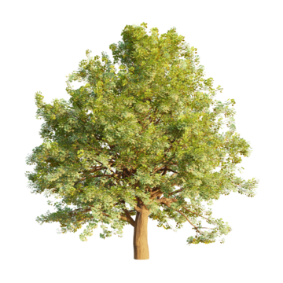

Welcome to Jardin du Temps
Jardin du Temps is a digital gardent
that explores the growth of trees through time.
This website allows you to observe how a tree develops
from its earliest stage to full maturity, and even into the future.
By selecting a tree species, you can learn about its biological
characteristics, lifespan, and ecological role,
before entering a time-based simulation of its growth.
